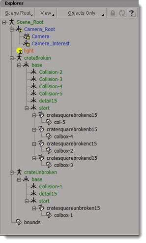
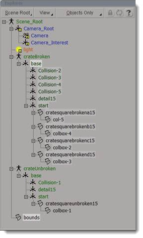
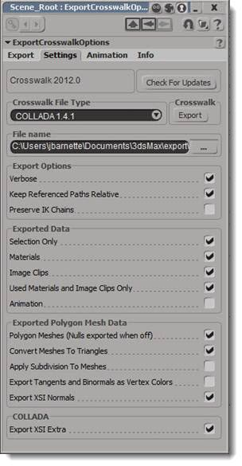
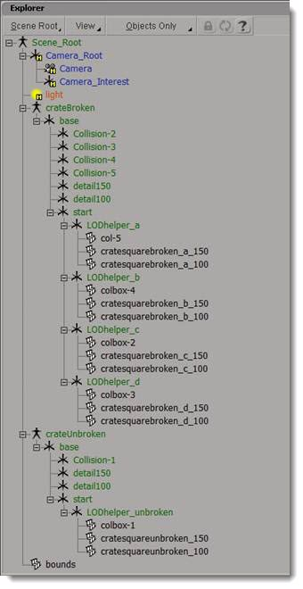
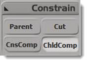
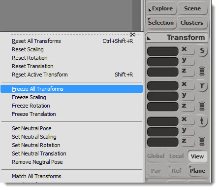
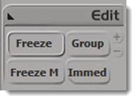
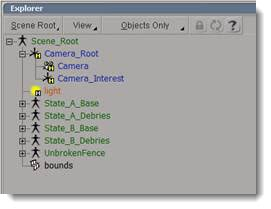
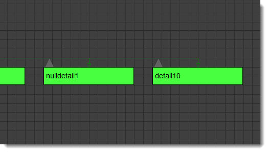

*this was made using Autodesk Softimage 2012
In Torque 3D destructible objects are created by building multiple states of an object (unbroken and broken) and swapping between them when appropriate. Once swapped, the pieces of the broken mesh can become physical simulation entities. The physicsShape.cs file is used to tell the engine how to swap out the undamaged and damaged states.
Unlike previous methods, no special PhysX plug-in is needed for your modeling program. In this much simpler method, everything is set up in physicsShape.cs file. Damaged versions can be made of multiple meshes that become physical when broken. For instance, the crate below has a single mesh made of its undamaged state (left) and four physical meshes that make up its damaged state (right):
(click to enlarge)
The crate is made up of two separate mesh files. Both are set up like traditional Torque 3D files, with an exception for the children of the Start Node. In this example, the meshes only have a single LOD.
The unbroken mesh:
(click to enlarge)

The broken mesh:
(click to enlarge)

A destructible object can have just a single physical collision volume for the broken mesh. For example, you might want a destructible barrel that does not become multiple pieces after the explosion; just a single dented barrel. The same process would be used to swap between the unbroken and broken version of the barrel.
Collision is set up in the traditional Torque fashion. Collision meshes are under the Start Node. Collision marker nodes are under the Base Node, using the standard prefix col- to represent a convex collision mesh.
When creating destructible objects, collision volumes must be children of their mesh counterpart. Complicated collision volumes can be costly, so T3D now allows for some inexpensive primitives to be designated using naming conventions. These should be used whenever possible:
When using box, sphere, and capsule primitives in your modeling application, use the above prefixes in their name. Primitives are not always the best option for a shape, so the traditional convex mesh designation of col- can still be used for convex shapes.
Each collision volume, convex mesh or primitive must still have a corresponding Collision Marker.
(click to enlarge)

Export your two meshes (broken and unbroken) to COLLADA format. It may be a good idea to create a folder specifically for destructible Physics shapes. Softimage uses Crosswalk for COLLADA export. It is a series of import/export plugins for transferring data between Softimage and other programs via the .xsi, .dae, and .fbx plugins. However, there is a bug in the way that Softimage exports COLLADA when using the “Export Selected” option where when you don’t select via a middle click “Branch Select” then it basically dumps everything in the root of the scene. To overcome this we will use Softimage’s “model containers” for our branches. In the image above you can see the model containers at the top of the hierarchy.
Here is what it looks like in the Explorer window:

So, to export the crate broken branch we will “middle-click” the “base-node” on the branch for the broken crate. Then hold CTRL and then “Left-Click” the bounds node. Like so:

Now, with the items we need selected we can export via Crosswalk. File>Crosswalk>Export…
Then on the Settings tab we need to make sure that we have the following items checked: 
Multiple LODs require a slightly different setup than the crate example above. To set up your mesh so that the broken (aka "debris") pieces, can LOD properly, a "LOD helper" must be a parent of the collision volume and meshes for all levels of detail for any given debris piece:

The LOD helpers are dummy objects which can be named anything as long as they do not end in a number. T3D would read this as a LOD level. None of the node names are critical, as long as they end in the proper detail level number and do not contain numbers otherwise.
The pivot points of any renderable mesh and its associated collision volume must share the same coordinates and orientation. An easy method to align these is setting the pivot points of all objects to 0,0,0 in world-space. The pivot points do not need to be in the center of the object they represent.
Shapes often need to have their transforms reset after being modeled so they align properly with their collision volume. To avoid any unwanted weirdness just in case you happened to accidently scale one of your “Base” or “Start” nodes, I suggest activating the “Child Compensation” under Constrain on the “MCP” on the right-hand side of the screen.

After you have enabled that you are ready to freeze things without fear of child objects freaking out because they were parented to an object that had some kind of SRT transfom on them. to freeze the transforms on the MCP Panel click on the word Transform>Freeze All Transforms. 
Freeze Modeling
Also, you will want to freeze the modeling. This is like the collapse stack function in 3D Studio Max. It is located in the “Edit” section of the “MCP”

The physicsShape.cs file goes in the same directory as the exported unbroken and broken meshes. For each destructible object, two datablocks are needed:
It is critical that the Debris Data precedes the Shape Data for any given destructible object. Example code for our square crate above:
datablock PhysicsDebrisData( CrateSquareDebris )
{
lifetime = 60.0;
lifetimeVariance = 0.0;
velocity = 0.1;
velocityVariance = 0;
shapeFile = "art/shapes/physicsShapes/crate_square_broken.DAE";
mass = 10;
dynamicFriction = 0;
staticFriction = 0.5;
restitution = 0.0;
linearDamping = 0.0;
angularDamping = 0.0;
linearSleepThreshold = 1.0;
angularSleepThreshold = 1.0;
waterDampingScale = 1.0;
buoyancyDensity = 0.0;
castShadows = "1";
friction = "0.4";
};
datablock PhysicsShapeData( PSCrateSquare )
{
category = "PhysicsShape";
shapeName = "art/shapes/physicsShapes/crate_square_unbroken.DAE";
emap = 1;
mass = 5;
massCenter = "0 0 0"; // Center of mass for rigid body
massBox = "0 0 0"; // Size of box used for moment of inertia,
// if zero it defaults to object bounding box
drag = 0.2; // Drag coefficient
bodyFriction = 0.2;
bodyRestitution = 0.1;
minImpactSpeed = 5; // Impacts over this invoke the script callback
softImpactSpeed = 5; // Play SoftImpact Sound
hardImpactSpeed = 15; // Play HardImpact Sound
integration = 4; // Physics integration: TickSec/Rate
collisionTol = 0.1; // Collision distance tolerance
contactTol = 0.1; // Contact velocity tolerance
minRollSpeed = 10;
maxDrag = 0.5;
minDrag = 0.01;
triggerDustHeight = 1;
dustHeight = 10;
dragForce = 0.05;
vertFactor = 0.05;
normalForce = 0.05;
restorativeForce = 0.05;
rollForce = 0.05;
pitchForce = 0.05;
debris = CrateSquareDebris;
friction = "0.4";
linearDamping = "0.1";
angularDamping = "0.2";
buoyancyDensity = "0.9";
staticFriction = "0.5";
explosion = WoodMinorExplosion;
radiusDamage = 0;
damageRadius = 0;
areaImpulse = 0;
restitution = "0.3";
invulnerable = "0";
waterDampingScale = "10";
};A destructible object can be built with multiple successive damage states. This way the player can slightly damage an object, then fully damage an object:
(click to enlarge)

In this example we will also use a combination of physical and non-physical meshes to make up the three "states" of destruction:
(click to enlarge)

The three different states are exported separately into five different files:
As before, in order to export the hierarchies properly we have to separate things into “model containers,” like so:

The individual mesh hierarchies end up looking something like this:
(click to enlarge)

The meshes are built either like traditional static Torque meshes or as physical pieces set up as described in the Introduction, Collision, and LOD sections above. As before, "middle-click" the base node of the branch that you are exporting and then "CTRL-click the bounds node, then export.
For example, I saved them out as:
fence_1_unbk.DAE |
Unbroken fence mesh |
fence_1_bkstate_a.DAE |
State A debries mesh |
fence_1_bkstate_b.DAE |
State B debries mesh |
fence_1_bkbase_a.DAE |
State A base mesh |
fence_1_bkbase_b.DAE |
State B base mesh |
In this case, the physicsShape.cs file should look something like this:
// fence 1 broken state A
datablock PhysicsDebrisData( PSfence1Adebris )
{
lifetime = 60.0;
lifetimeVariance = 0.0;
velocity = 0.1;
velocityVariance = 0;
shapeFile = "art/shapes/physicsShapes/fence_1_bkstate_a.DAE";
mass = 1.5;
dynamicFriction = 0;
staticFriction = 0.3;
restitution = 0.0
linearDamping = 0.1;
angularDamping = 0.1;
linearSleepThreshold = 1.0;
angularSleepThreshold = 1.0;
waterDampingScale = 10;
buoyancyDensity = 0.8;
friction = "0.2";
};
datablock PhysicsShapeData( PSfence1A )
{
category = "PhysicsShape";
shapeName = "art/shapes/physicsShapes/fence_1_unbk.DAE";
mass = 0;
debris =PSfence1Adebris;
explosion = "SplinterExplosion";
friction = "0.1";
linearDamping = "0.1";
angularDamping = "0.1";
buoyancyDensity = "0.2";
staticFriction = "0.1";
restitution = "0.3";
invulnerable = "0";
minDamageAmount = "0.5";
destroyedShape = "PSfence1B";
};
// fence 1 broken state B
datablock PhysicsDebrisData( PSfence1Bdebris )
{
lifetime = 60.0;
lifetimeVariance = 0.0;
velocity = 0.1;
velocityVariance = 0;
shapeFile = "art/shapes/physicsShapes/fence_1_bkstate_b.DAE";
mass = 1.5;
dynamicFriction = 0;
staticFriction = 0.3;
restitution = 0.0;
linearDamping = 0.1;
angularDamping = 0.1;
linearSleepThreshold = 1.0;
angularSleepThreshold = 1.0;
waterDampingScale = 10;
buoyancyDensity = 0.8;
friction = "0.2";
};
datablock PhysicsShapeData( PSfence1baseB )
{
category = "PhysicsShape";
shapeName = "art/shapes/physicsShapes/fence_1_bkbase_b.DAE";
mass = 0;
invulnerable = "1";
};
datablock PhysicsShapeData( PSfence1B )
{
category = "PhysicsShape";
shapeName = "art/shapes/physicsShapes/fence_1_bkbase_a.DAE";
mass = 0;
debris = PSfence1Bdebris;
explosion = "SplinterExplosion";
friction = "0.1";
linearDamping = "0.1";
angularDamping = "0.1";
buoyancyDensity = "0.2";
staticFriction = "0.1";
restitution = "0.3";
invulnerable = "0";
minDamageAmount = "1.25";
destroyedShape = "PSfence1baseB";
};In the Datablock Editor you will need to specify the "destroyedShape" for each state:
(click to enlarge)

To place the shape in the level, choose the first state physics shape in the Inspector and add it to your scene.
To minimize performance the overhead of having a large number of physical shapes any hierarchy can be given a "Null LOD" detail marker. The detail number of the next LOD marker will denote when the meshes should disappear.

This tutorial covered the process of adding destructible objects to your T3D game by building multiple states of an object. This feature greatly enhances interaction and immersion, so plan ahead when creating your art and designing levels.
You can download the sample Softimage files shown in this guide by clicking HERE.
Contributed by James Brad Barnette.